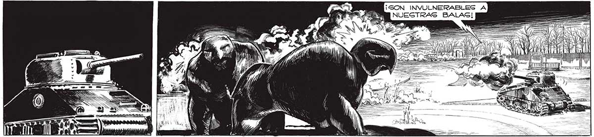
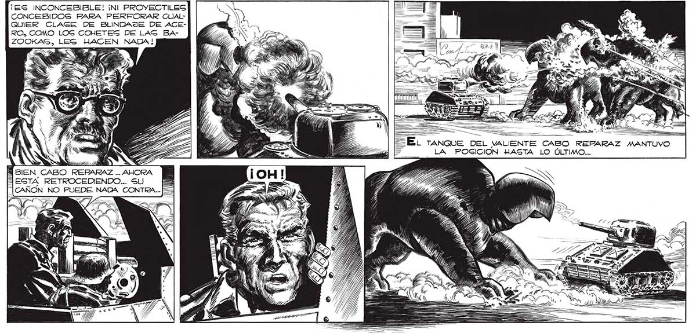

212 a nd, AO ; AN IN Ñ Ú _: e ¡ES INCONCEBIBLE! ¡Nl PROYECTILES CONCEBIDOS FARA PERFORAR CUAL QUIER CLAGE DE BLINDAJE DE ACERO, COMO LOS COHETES DE LAG BAZOOKAS, LES HACEN NADA ! | , 23 YB, | AA VIIR 2, E EME e: 38 E. ranoueE 3 z S VEZ sien CABO REPARAZ... A l)) LO FTE EN A ESTA RETROCEDIENDO... su BS Enbmegl Y) AG a AS [CAÑON NO PUEDE NADA CONTRA... + FA ES) A Y Ve có, E O 6 Res >

